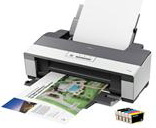

Статьи о компьютере
Какой выбрать блок питания для компьютера.
Покупая компьютер с оптимальной конфигурацией, перед нами становиться сложная задача по выбору блока питания нужной мощности. Вся трудность в том, что мощность блока питания не зависит от производительности компьютера, а зависит от суммы потребляемой энергии каждого элемента компьютера.подробнее >>
Разблокирование процессоров AMD. Мифы и реальность.
Все чаще на различных форумах в интернете встречается множество баек и «правдивых» историй о чудесном превращении средненького двухъядерника от AMD в мощного, четырехголового монстра.подробнее >>
Источники Бесперебойного Питания. Четко о главном.
Все чаще на различных форумах в интернете встречается множество баек и «правдивых» историй о чудесном превращении средненького двухъядерника от AMD в мощного, четырехголового монстра.подробнее >>>
AMD или INTEL ?
Согласитесь, многие из вас при покупке компьютера задавались вопросом, на базе какого процессора он должен быть, AMD или Intel? В этой статье мы рассмотрим преимущества каждой из корпорации, после чего вы будете точно уверены, какой процессор нужен именно вам.подробнее >>>
Как правильно выбрать компьютер для офиса.
Сегодня практически в каждом офисе обязательно стоит хотя бы один, а то и несколько компьютеров. Какими же оптимальными характеристиками должен обладать компьютер, чтобы обеспечивать стабильную и удобную работу в офисе?подробнее >>>

Оперативная память.
ОЗУ в ПК выполняет роль временного буфера хранения информации, т.е. при запуске любого приложения оно частично загружается в ОЗУ=>чем больше ОЗУ, тем больше можно открывать различные приложения и работать в них.подробнее >>>
Как выбрать монитор.
Выбирать монитор следует особенно тщательно, поскольку из всех составляющих компьютера он дольше всего не теряет своей актуальности. Как правило, мониторы покупают на 5 или более лет. В настоящий момент в продаже вы уже не найдете стеклянных мониторов старого образца, на смену им давно пришли жидкокристаллические дисплеи.подробнее >>>

подробнее >>>
Как выбрать принтер домой.
Три основных вида принтеров - это матричные, струйные и лазерные. Разделение основано на принципах печати, которые используются в разных принтерах. Выбирайте тот, который удовлетворяет вашим потребностям и финансовым возможностям.подробнее >>>
Параметры, имеющие особое значение при покупке видеокарт.
При сборке нового компьютера или модернизации старого дело доходит до выбора видеокарты. Так как видеокарта является одним из главных компонентов компьютера, то к ее покупке нужно подойти очень серьезно, если вы хотите купить действительно хороший продукт, не потеряв при этом лишних денег.подробнее >>>
Подбор (Выбор) процессора.
При сборке нового компьютера или модернизации старого дело доходит до выбора видеокарты. Так как видеокарта является одним из главных компонентов компьютера, то к ее покупке нужно подойти очень серьезно, если вы хотите купить действительно хороший продукт, не потеряв при этом лишних денег.подробнее >>>